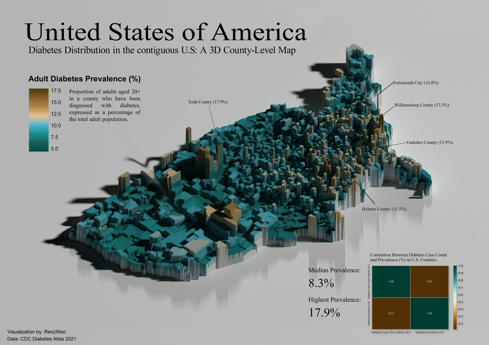

U.S. Diabetes Prevalence: A 3D County-Level Choropleth#
Type |
Course portfolio: DS221 Data Visualization and Storytelling (Portfolio 1) |
Domain |
Public health · Geospatial visualisation |
Tools |
R, |
Date |
2025 |
Repository |
[GitHub repo link] |
TL;DR: A 3D map of adult diabetes prevalence for every county in the contiguous United States. Each county is extruded by its prevalence and coloured by the same value, so regional clusters are visible at a glance. The story: prevalence is uneven, concentrated in the South, and not the same thing as case counts (r = 0.12).
median county prevalence (adults 20+)
highest county prevalence
correlation between case count and prevalence
height + colour carry the same variable
1. Problem Statement#
A flat choropleth of diabetes rates hides how sharply the burden varies from county to county. Can a 3D extruded map make regional clusters and outliers immediately readable, and tell a clear story to a general audience?
Objectives
Visualise county-level adult diabetes prevalence (ages 20+) across the contiguous U.S.
Use dual encoding (elevation and colour) to make hotspots stand out.
Separate two ideas that are easy to confuse: how many people have diabetes vs. what share of the population does.
Produce a poster-quality, annotated A3 graphic.
2. Data & Storage#
Dataset |
Source |
Format |
Role |
|---|---|---|---|
Diabetes prevalence by county |
CDC Diabetes Atlas (2021) |
CSV ( |
Attribute data: county FIPS code, prevalence (%), case counts |
County boundaries |
U.S. Census TIGER/Line, “National Sub-State Geography” |
GeoPackage ( |
Vector polygons (geometry) |
Data management notes
The GeoPackage is large and can exceed GitHub’s 100 MB file limit, so the README points to the Census download instead of committing it, and the diabetes CSV and design source files are kept out of version control via
.gitignore.Multi-layer GeoPackage inspected with
st_layers(), then theCountylayer read withst_read().The 3D scene is ray-traced at 2400 × 3000 px with 300 samples (roughly 30–90 minutes on a typical CPU), then composed into a very large A3 poster image (≈ 10,700 × 7,600 px).
3. Preprocessing & Data Engineering#
The critical work happens before any drawing:
Step |
Detail |
Why |
|---|---|---|
Choose the layer |
Read only the |
The file also contains other geographic levels |
Restrict to the contiguous U.S. |
Drop state FIPS prefixes |
Keeps the map compact and comparable |
Repair join keys |
FIPS codes lose leading zeros when read as numbers, so |
Keys must match exactly, or counties silently drop out |
Attribute join |
|
Preserves geometry while attaching the statistics |
Missing values |
Counties without data are drawn in neutral grey ( |
Makes gaps visible instead of hiding them |
Type coercion |
|
Guards against text-typed numbers |
4. Method#
CDC CSV ──▶ pad FIPS ──┐
├─▶ left join on 5-digit FIPS ─▶ filter to contiguous U.S. ─▶ ggplot2 geom_sf (2D choropleth)
Census GPKG ─▶ County ─┘ │
rayshader::plot_gg (extrude by fill value)
│
render_highquality ─▶ annotated A3 poster
Visual design choices
Palette:
MetBrewerIsfahan1, reversed so warm gold = high prevalence and deep teal = low.Extrusion:
plot_gg(scale = 180, phi = 35.6, theta = −53.6, sunangle = 125, shadow = TRUE)for a three-quarter camera angle with soft shadows so the tall counties read as landmarks.Storytelling layer (poster): title and subtitle, a plain-language legend definition, callouts for the five highest counties, a headline stat block (median 8.3%, highest 17.9%), and a correlation inset.
5. Results#


Fig. 2 Final annotated A3 poster: county height and colour both encode adult diabetes prevalence (CDC Diabetes Atlas 2021).#
Key findings
The typical county is around 8.3%, but the distribution is uneven: a small number of counties sit far above it.
Highest prevalence reaches 17.9% (Todd County), followed by Williamsburg County (17.5%), Portsmouth City (16.8%), Gadsden County (15.9%), and Holmes County (15.5%). The high-prevalence cluster is concentrated in the South.
Counts and rates tell different stories (r = 0.12). High raw case counts appear in populous urban counties, whereas high prevalence clusters in rural Southern counties. A count map alone would mostly re-draw the population map.
6. Data Science Concepts Demonstrated#
Concept |
Where it appears |
|---|---|
Geospatial data |
Vector polygons in GeoPackage format, layers, simple-features ( |
Key-based joins & identifier hygiene |
Zero-padding FIPS codes so tabular data merges cleanly with geometry |
Data cleaning & scoping |
Filtering out non-contiguous states and territories by FIPS prefix |
Rates vs. counts |
Explaining why prevalence (%) and case counts are different measures |
Correlation |
Case count vs. prevalence (r = 0.12), shown as an inset heatmap |
Visual encoding |
Dual encoding (height + colour), colour-scale design, handling of missing data |
Data storytelling |
Titles, legends in plain language, annotated outliers, headline statistics |
Computational cost awareness |
Ray-tracing settings and render-time trade-offs |
Reproducibility |
R Markdown pipeline, package list, and documented data sources |
7. Limitations & Next Steps#
Extrusion trade-offs. 3D height can hide small counties behind tall ones and distorts area perception. Pair the poster with an interactive or 2D companion view.
Better correlation graphic. A 2 × 2 heatmap of one coefficient carries little information; a scatterplot of case count vs. prevalence (log-scaled) would show the shape of the relationship.
Unambiguous labels. Several states have a Todd County and a Holmes County, so callouts should include the state.
Spatial statistics. Test whether the high-prevalence cluster is significant (e.g. Moran’s I, LISA hot-spot maps).
Explain the pattern. Join county covariates (poverty, rurality, access to care, age structure) and model prevalence with age-adjusted rates.
Trend over time. Compare multiple Atlas years with small multiples or an animation.
Accessibility. Check the palette for colour-vision deficiencies and add alt text.